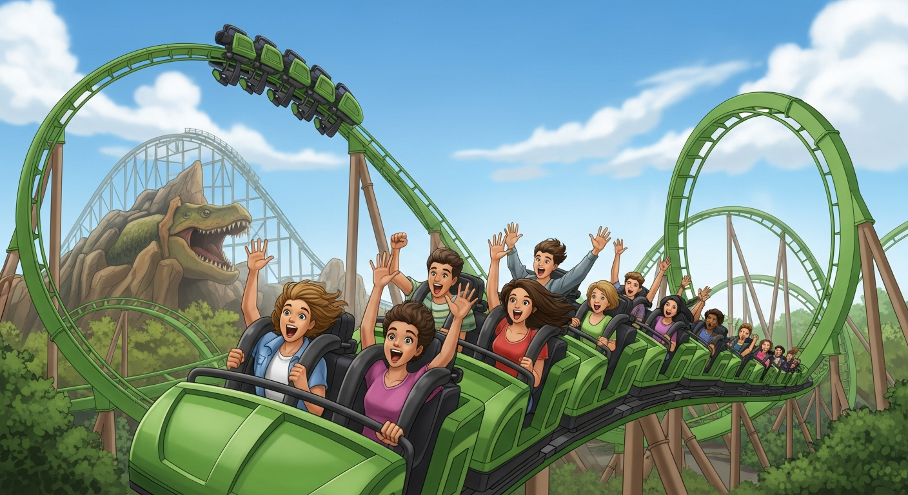

Best Rides for Teens at Islands of Adventure: The 2026 Parent's Guide

Let's be honest: teenagers can be impossible to impress. But Islands of Adventure? It's basically designed to blow their minds. With some of the most intense roller coasters in Florida, immersive Harry Potter experiences, and Marvel superhero attractions, this park delivers thrills that will actually get your teen to look up from their phone.
After multiple trips with my own thrill-seeking teenagers (and their very different tolerance levels), I've ranked every must-do ride at Islands of Adventure for teens. This guide covers height requirements, intensity levels, and the strategic order to hit them for maximum fun and minimum complaining.
Quick Comparison: Best Teen Rides at Islands of Adventure
| Ride | Thrill Level | Height Req | Type | Best For |
|---|---|---|---|---|
| Jurassic World VelociCoaster | Extreme | 51" | Coaster | Thrill seekers |
| Hagrid's Motorbike Adventure | High | 48" | Coaster | Harry Potter fans |
| The Incredible Hulk Coaster | Extreme | 54" | Coaster | Adrenaline junkies |
| Harry Potter Forbidden Journey | High | 48" | Dark Ride | Immersive experience |
| Spider-Man Adventure | Moderate | 40" | 3D Dark Ride | Marvel fans |
| Dudley Do-Right's Ripsaw Falls | Moderate | 44" | Water Ride | Summer cooldown |
| Jurassic Park River Adventure | Moderate | 42" | Water Ride | Dinosaur fans |
| Doctor Doom's Fearfall | High | 52" | Drop Tower | Drop ride lovers |
The Best Rides for Teens (Ranked)
1. Jurassic World VelociCoaster — The Ultimate Thrill
🦖 Jurassic World VelociCoaster
The experience: Consistently ranked as one of the best roller coasters in the world, VelociCoaster is the crown jewel of Islands of Adventure. With speeds up to 70 mph, a 155-foot-tall top hat, and four inversions (including a zero-gravity stall over the lagoon), this is the ride your teen will talk about for years.
What makes it special: Unlike many coasters that just focus on speed, VelociCoaster combines intense thrills with incredible theming. You'll "race" alongside velociraptors through the paddock, and the launches are genuinely explosive.
Parent tip: This ride often has the longest lines in the park. Get here at rope drop or use single rider if your teen is comfortable riding alone. The queue is partially outdoors with minimal shade—bring water.
2. Hagrid's Magical Creatures Motorbike Adventure — Best Overall Experience
🏍️ Hagrid's Magical Creatures Motorbike Adventure
The experience: Hailed by many as the best ride in Florida (if not the world), Hagrid's combines storytelling with serious thrills. Seven launches, a vertical drop, and the chance to ride either a motorcycle or sidecar through the Forbidden Forest make this truly unique.
What makes it special: Unlike any other coaster, you actually feel like you're flying through the Forbidden Forest on Hagrid's motorbike. The animatronics are stunning, and there are multiple surprises I won't spoil. Even teens who aren't huge Potter fans love this ride.
Parent tip: Lines can exceed 2 hours during peak times. This is worth using Early Park Admission for if you're staying at a Universal hotel. The motorbike seat offers a more intense experience than the sidecar—have your teen try both!
3. The Incredible Hulk Coaster — Classic Adrenaline
🟢 The Incredible Hulk Coaster
The experience: This launch coaster rockets you from 0 to 40 mph in two seconds flat, with seven inversions and speeds up to 67 mph. The iconic green track dominates the skyline of Marvel Super Hero Island, and the roar of the launch is impossible to miss.
What makes it special: The launch is genuinely intense—you're accelerated out of a tunnel with incredible force. The ride has been recently refurbished and runs smoother than in previous years. For coaster enthusiasts, this is a must-do.
Parent tip: The 54" height requirement is stricter than most rides here—measure your teen before promising this one. Single rider line moves quickly if your teen doesn't mind splitting up.
4. Harry Potter and the Forbidden Journey — Immersive Magic
⚡ Harry Potter and the Forbidden Journey
The experience: Located inside Hogwarts Castle, this groundbreaking ride combines physical sets with projection domes and robotics. You'll fly with Harry, encounter Dementors, escape giant spiders, and play Quidditch—all while being moved by a robotic arm system.
What makes it special: The queue alone is worth the wait. You'll walk through Hogwarts Castle, seeing Dumbledore's office, the Defense Against the Dark Arts classroom, and the Sorting Hat. For Potter fans, it's pure magic.
Parent tip: This ride can cause motion sickness due to the screen-based sections. Have your teen ride before eating, and skip it if they're prone to nausea. The castle walkthrough is available as a "tour only" option for those who don't want to ride.
5. The Amazing Adventures of Spider-Man — 3D Action
🕷️ The Amazing Adventures of Spider-Man
The experience: Considered one of the best dark rides ever created, Spider-Man combines physical sets with 3D projection for an immersive superhero adventure. You'll help Spidey catch villains who've stolen the Statue of Liberty.
What makes it special: The ride seamlessly blends real sets with 3D screens in a way that still impresses despite being older technology. The simulated 400-foot "freefall" at the end is a highlight.
Parent tip: This is a great "warm-up" ride for teens who want to ease into the bigger thrills. The 40" height requirement means most teens can ride, and it's a good test of how they handle motion simulation.
Best Water Rides for Hot Days
Dudley Do-Right's Ripsaw Falls
A log flume ride with personality. The drop is significant (75 feet), and you will get soaked—especially if you sit in the front. The theming is charmingly retro, and the view of Hogwarts Castle from the top of the lift hill is unbeatable. Height requirement: 44".
Popeye & Bluto's Bilge-Rat Barges
If your teen wants to get absolutely drenched, this is the ride. Unlike other river rapids rides, Bilge-Rat Barges has multiple waterfalls and water cannons that will leave no dry spots. Bring a change of clothes or plan this as your last ride of the day. Height requirement: 42".
Strategic Ride Order for Maximum Fun
Here's the order I recommend for teens who want to hit the best rides with minimal waiting:
- Rope drop Hagrid's Motorbike Adventure — This line gets absurdly long. Be at the park 30 minutes before opening.
- VelociCoaster — Head here immediately after Hagrid's while the park is still quiet.
- Harry Potter and the Forbidden Journey — The line moves steadily, and you're indoors.
- The Incredible Hulk Coaster — Single rider line is your friend here.
- Spider-Man — Good midday option when outdoor lines are brutal.
- Water rides — Save Dudley Do-Right and Bilge-Rat Barges for the hot afternoon.
Is Islands of Adventure Better Than Disney for Teens?
In my experience, yes—especially for teens aged 13-17. Here's why:
- More intense thrills: Disney's coasters (like Space Mountain and Rock 'n' Roller Coaster) are fun, but they don't match the intensity of VelociCoaster or Hulk.
- Relevant IPs: Harry Potter, Marvel, and Jurassic World resonate more with teens than princesses and classic Disney characters.
- Less "kiddie" stuff: While Islands has Seuss Landing for little ones, the overall vibe is more mature.
- Single rider lines: Universal embraces single rider lines, which teens love because they can ride more with less waiting.
That said, Disney still wins for overall theming, parades, and nighttime spectaculars. My recommendation? Do both if you can, but prioritize Islands of Adventure if you have thrill-seeking teens.
Get Universal Tips in Your Inbox
Weekly park guides, money-saving hacks, and insider secrets—no spam, unsubscribe anytime.
Join 2,000+ parents planning magical trips.
Questions About Islands of Adventure?
Ask below and we'll answer. Your question might help other parents too!
Ready to Book Your Universal Trip?
Lock in discounted Universal Orlando tickets and save up to $50 per person. Islands of Adventure is included with all multi-park tickets.
Get Discounted Tickets →